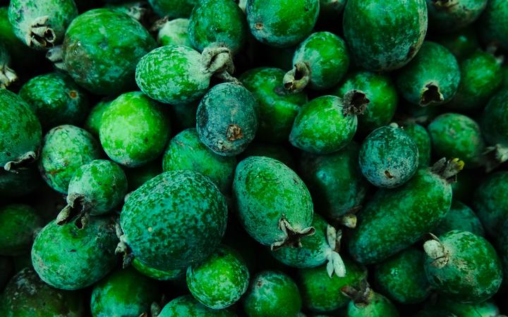
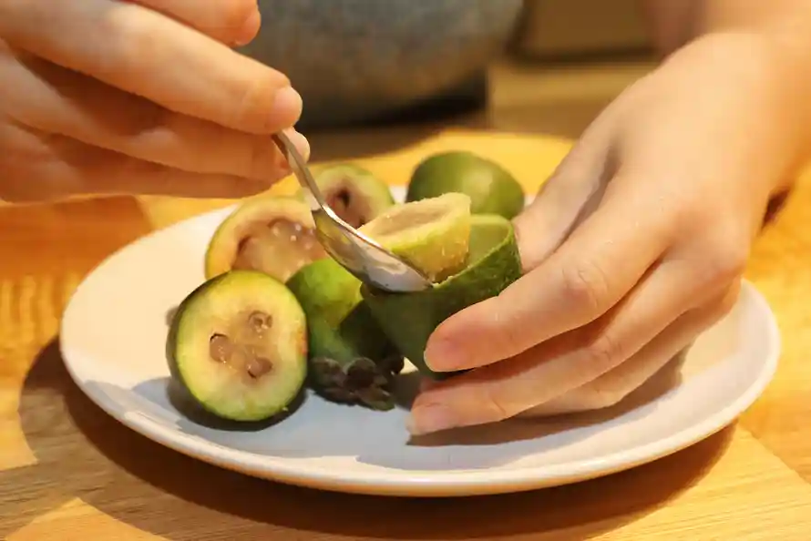
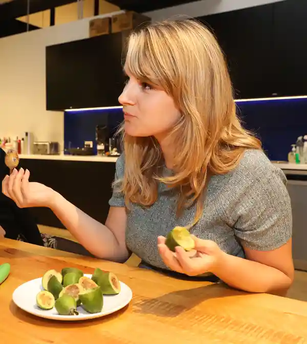
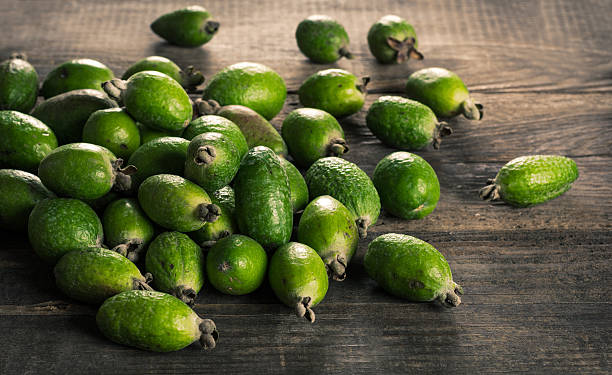

Feijoa harvest in full tilt a month early in Gisborne
Update about the Feijoa haverst by Hugo Cameron

Feijoas are expected to hit the shelves this week as good growing conditions have seen harvesting of this season's crop kick off a month earlier than usual.
Kaiaponi Farms has been growing feijoas in Gisborne for the past 20 years and sells the fruit through its Joa brand for both the local and export markets.
Spokesperson David Hansen said the first fruit would normally be picked at the start March but the harvest got under way last month and was now in full swing, with decent volumes coming through.
The farm had seen sunny conditions which was great for the crops, along with a decent dose of water, Hansen said.
"We've been pouring plenty of water on, they like irrigation so they've enjoyed a good season really," he said.
"Fruit size is good. Flavours are good. Good sugar levels. So, it's looking really good," Hansen said.
There were slightly fewer feijoas on the trees than usual but that actually helped to grow larger fruit, he said.
"Volumes are down a little, so just less fruit on the tree helps that tree size them up a little bit better.
"It does balance out a little and I think overall volumes won't be significantly down, it's just probably some varieties are down more than others."
People should enjoy feijoas while they could, as the season only ran for two to three months, Hansen said.
Produce distributor T&G Fresh said in a statement it was working with Kaiaponi Farms on a new social media campaign to drive consumers to feijoas, given the small window of opportunity in the short season.
Courtesy of RNZ, see the original story here.
Falling for feijoas: the fruit New Zealand wants the world to love
Article about potential Feijoa exporters by Ella Hunt

At this time of year, New Zealanders in the diaspora will do just about anything to get their hands on ‘green gold’. Now exporters have their eye on a wider market.
"To most New Zealanders, imagining life without feijoas is almost unthinkable.” Yes, this is marketing copy, but as with all the best marketing copy, it is also true. At this time of year, these small, smooth green fruits are plentiful in New Zealand, traded by the bucket for next to nothing and infusing everything from chocolate to crumbles, ice-cream to vodka with their distinctive, soapy-citrus flavour.
Physically they are unassuming, a little like oval limes of a darker green, but their taste defies description, which is “rather challenging” for Pole to Pole, the company “on a mission to promote NZ Feijoas around the world!”. They give it a go anyway, in a guide for growers to “marketing your fruit”.
“Many liken them to guavas or quince, but their complex flavour also brings to mind strawberries and pineapple, with a pear-like gritty texture, and a hint of mint.”
The best indication of their taste is their powerful and distinctive fragrance, which Wikipedia says “strongly” resembles that of the chemical methyl benzoate.
As this might suggest, a little feijoa goes a long way in flavour, and it is surprisingly versatile, appropriate in baking, confectionery, chutney, smoothies, salads and even alcohol. In New Zealand, where they have been embraced with a zeal that obliterates their South American origins, they crop up in everything.
Mostly, though, they are eaten like kiwifruit, another foreign fruit inextricably linked to New Zealand: sliced open and scooped out with a spoon.
Feijoas are technically “available” in Australia, but invariably in small quantities at exorbitant prices at boutique grocers. (Harris Farm Markets say they “have been and are stocked ... as far back as 2015”, the inference being “before they were cool”.) Like dragonfruit or any other “exotic fruit” that no one knows what to do with, they have low name recognition – hence the marketing copy.
Pole to Pole, based in New Zealand’s Bay of Plenty region, export Zeijoa-brand feijoas around the world. Its target market is clear: New Zealand has one of the largest diasporas of any country in the world, with an estimated 600,000 citizens in Australia alone. Forget about not being able to vote, or the university fees hike: New Zealanders never feel less at home in Australia than for the three months of the year friends and family back home are experiencing peak feijoa fatigue.

As a result of this scarcity, intelligence-sharing within the New Zealand community in Australia as to where the green gold can be found is very good, and made more urgent by time pressure: once ripe, they don’t last long (though you can drag out the halcyon period of plenty by freezing their pureed flesh).
“There are feijoas on the ground on my ride to work in Sydney, yet to spy the tree,” tweeted a friend, new to Australia, with a picture of some small sad fruits on the verge of the road. It was his first feijoa season out of New Zealand – always the hardest.
“Where is the source? Think they’re rolling down the hill.”
A recent photo posted by Zeijoa to Facebook of crates of the things being shipped to Coles supermarkets in Australia (“Have any expat Kiwis spotted any in stores yet??”) drew nearly 300 likes, 400 comments and more than 500 shares.
Todd Abrahams, the managing director of Pole to Pole and director of the grower-owned Zeijoa brand formed in 2014, says Australia is a great market, despite its “stringent” requirements on imported fruits. “There’s a lot of expat Kiwis there that can tell their friends,” he says.
For many, feijoas are the stuff of childhood memories, Abrahams says. “A lot of people joke they don’t like paying for them because you’d fob them from your neighbours. Literally, at this time of year, in the upper North Island, they’re falling on to the streets.”
But the real measure of feijoas’ – sorry, Zeijoas’ – success will be whether they are embraced by people who did not grow up with them.
Abrahams says there has been a good response in Australia, Singapore and Malaysia and small shipments have been trialled in the US and Japan. Pole to Pole is also working on the Middle East, particularly Dubai. The lack of recognition is a barrier, he says, but not an insurmountable one.
“To get consumers to walk in and pick it off the shelf, that’s a challenge, because they don’t know what they’re buying. But these things take time. Other fruits have done it.”
Courtesy of the Guardian, see the original story here.
In Praise of Feijoas
Feijoa adventures by Justin Russell

A few weeks ago I planted a new feijoa hedge to give my stonefruit trees some protection from the prevailing summer easterlies. The area I chose for the hedge is a tough one. It's exposed, and not far from a reasonably large eucalypt. To add insult to injury, I planted the hedge before an unexpected dry spell that saw hot winds blow straight out of central Australia for days on end.
To reduce moisture loss from the leaves I cut the plants back by about two thirds, and we watered daily during the dry spell. Prior to planting I emptied a bucket of water into each of the holes and let it drain deeply into the soil. Despite these treatments, it was so dry that I thought the feijoas might be done for, and we'd be up for a dozen new plants.
Ye of little faith! Instead of dying, the plants actually put on new foliage. I knew feijoas (pineapple guavas) were tough enough to grow in a wide range of conditions, but this was a complete revelation to me. I've planted things like lillypillies in similar dry spells only to see them drop dead within days, so the secret to the feijoa's toughness must be in the leaves. They're silvery, which reflects heat from the sun, and really leathery, which reduces transpiration.
Feijoa foliage is also cold hardy. I've got an old established plant here in the garden, and it copes easily with our frosty winters, even surviving a freeze of -10C in 2007. Ten metre tall trees dropped their foliage and some plants with a reputation for hardiness simply froze to death, but not the feijoas. They were nipped back a bit, but came on well in spring and set a good crop of fruit the following summer.
It's just as well because the old feijoa was one of the few fruiting plants in the garden when we arrived in 2006. If you've never eaten one of the torpedo shaped fruits before, the flavour is something akin to pineapple sherbert. I like it a lot. Fresh feijoas are eaten just like a kiwifruit – you cut it in half and then scoop out the flesh with a teaspoon. Cooking seems to bring out the pineapple flavour even more, so in a bumper year, we make one of my favourite jams from the glut.
I can think of only two downsides to growing feijoas. One is that they provide a food source for fruit fly during autumn, and it will be necessary to use organic baits and sprays to keep the insects under control. The second downside is that the feijoa is part of the Myrtaceae family. As a consequence it may become prone to the recently introduced fungal disease myrtle rust. Early tests indicate good resistance, so here's hoping feijoa is one of the myrtles that remains unaffected. It would be a shame to lose such a fantastic plant.
Courtesy of the Organic Gardner, see the original story here.